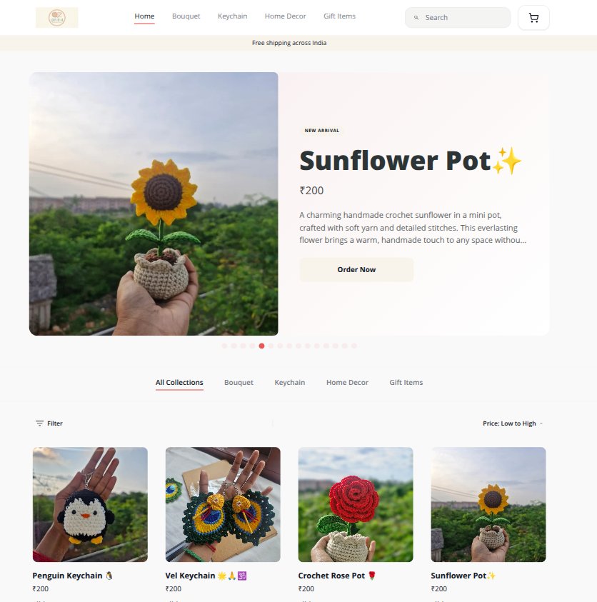

WhatsApp chatsQuestions, photos, repeat replies
Launch offer: 3 months free
Your business deserves its own online store.
Create a professional storefront, showcase every product, and receive organized orders directly on WhatsApp — without coding or a complicated setup.
Get your store now
Built for local Indian businesses
your store
Products Collections Bag (2)
Featured productsView all →
✿
Everyday essentials
From ₹499
◒
Handmade favorites
From ₹799
✦
New arrivals
From ₹299
NEW ORDER₹1,249 via WhatsApp
✓
↗
THIS MONTH
+24% growth
+24% growth
3+businesses onboarded
60+products published
1,000+storefront visits
Early proof from businesses already building their online presence with WhatsCart.
Scattered to one place
One link connects every post,
product, customer, and order.
Keep using the channels your customers know. WhatsCart becomes the organised business layer underneath them.
Where selling starts
Instagram postsProducts spread across your feed
Facebook postsAnother place to keep updated
Your one source of truth
YOUR BRANDED STORE
yourname.whatscart.in
- Products & variants
- Categories & collections
- Customer-ready order details
What you gain
Curated linksShare only what matters now
Structured ordersClear items, IDs, and statuses
Search & AI foundationPublic, machine-readable pages
Source analyticsKnow what brings customers
Growth tools included
Site + SEO + Analytics.
Ready by default.
A WhatsApp catalog helps customers browse inside WhatsApp. WhatsCart adds the public business presence and feedback loop you need to grow beyond a chat thread.
01Site
A branded home customers can open anywhere.
Your logo, colors, products, categories, collections, contact details, and shareable .whatscart.in address.
yourname.whatscart.in
02SEO + GEO/LLMO
Built so search engines and AI systems can understand it.
Canonical metadata, crawlable pages, XML sitemaps, rich share previews, and Schema.org product and store data—without pretending to guarantee rankings.
03Analytics
See what is working, not just what was posted.
Track visits, orders, revenue, best sellers, top customers, and whether traffic came from WhatsApp, Instagram, Facebook, a copied link, or organic discovery.
Views1,000+
Traffic sources
Curated collections
Share the right products at the right moment.
Select a set of products, name the collection, and share one public link. Customers see a focused page instead of searching through every item you sell.
Diwali Collection
Wedding Gifts
Birthday Gifts
Ready to Ship
Build a collection in minutes
Select products3 selected
✿Crochet Rose Pot✓
⌁Wedding Gift Set✓
◉Handmade Keychain✓
PUBLIC COLLECTION
Wedding Gifts
loops-by-ak.whatscart.in/catalog/...
Ready to share ↗
Choose the right next step
WhatsApp Catalog, WhatsCart,
or Shopify?
Each solves a different problem. WhatsCart is the focused middle step for sellers who want to keep WhatsApp at the center while gaining a website, SEO, and analytics.
| What you need | WhatsApp Catalog | Best for WhatsApp-first growthWhatsCart | Shopify |
|---|---|---|---|
| Customer experience | Browse inside WhatsApp | Branded public website | Full ecommerce website |
| Collections | In-app catalog collections | Curated public collection links | Website collections |
| Site + technical SEO | Not a public business website | Included by default | Included with broader SEO tools |
| Storefront analytics | No public-site traffic and revenue dashboard by default | Views, orders, revenue, products, customers & sources | Advanced reports and analytics |
| Order workflow | Conversation-led | Structured order + direct WhatsApp chat | Online checkout and commerce operations |
| Setup | Simple catalog setup | 5 guided stages | Broader store configuration |
| Ongoing price | Free app | ₹99/month after 3 free months | From ₹1,499/month billed yearly* |
| Best fit | Simple in-chat browsing | WhatsApp-first small businesses | Businesses needing a full commerce stack |
*Shopify India Basic price as of July 2026; month-to-month price is ₹1,994. View Shopify pricing ↗ WhatsApp Catalog details are based on WhatsApp’s official guide ↗.
Your store in five stages
Guided from business idea
to a store ready to share.
No coding. No theme hunting. Complete the essentials from the phone you already use.
- 01
Business category
Choose garments, home bakery, or handicrafts.
- 02
Business details
Add your name, WhatsApp number, address, and service area.
- 03
Brand identity
Upload your logo and choose a color palette.
- 04
Review & launch
Check your details before the store goes live.
- 05
Store ready
Add products, build collections, and share your link.
See WhatsCart in the wild
Loops_by_ak is already live.
Browse a real WhatsCart store with searchable products, categories, cart, rich product pages, and a direct maker connection.
Open the live store
Click to explore the live store ↗Simple launch pricing
Start free.
Grow with confidence.
Site, technical SEO, analytics, products, collections, and WhatsApp-first orders in one simple plan.
✓
No credit card required
Start today and decide when you are ready.
LIMITED LAUNCH OFFER
Everything you need to grow online
₹99/ month
3 MONTHS FREE TRIAL
- ✓ Unlimited product listings
- ✓ Branded .whatscart.in store
- ✓ Public collection links
- ✓ WhatsApp-first structured orders
- ✓ Storefront and source analytics
- ✓ Technical SEO foundation
Questions, answered
Everything clear
before you start.
Still deciding between a catalog and a full store? These are the useful differences.
Does WhatsCart replace WhatsApp?
No. WhatsCart complements WhatsApp. Customers browse and build an order in your public store, while you keep the direct customer conversation on WhatsApp.
How is it different from a WhatsApp Business catalog?
WhatsApp catalogs are useful for in-app browsing and collections. WhatsCart adds a branded public website, shareable public collection pages, structured orders, technical SEO, and storefront analytics.
Are the website, SEO foundation, and analytics included?
Yes. Every store includes a public storefront, canonical metadata, crawlable pages, sitemaps, Schema.org data, rich share previews, and analytics for visits, orders, revenue, products, customers, and traffic sources.
Will WhatsCart guarantee a Google or AI ranking?
No platform can guarantee rankings. WhatsCart gives search engines and AI systems a strong technical foundation for understanding your store and products.
Do I need a computer or technical knowledge?
No. WhatsCart is mobile-first. The setup, product management, collection sharing, orders, and analytics are designed around the phone you already use.
How do customers pay me?
The structured order arrives with the details you need. Coordinate payment through UPI, cash, or your preferred method directly with the customer.
What address will my store use?
Your store launches on a memorable branded address such as yourname.whatscart.in, ready to share across WhatsApp and social media.
When is Shopify the better fit?
Shopify is a strong choice when you need a broad commerce platform with online payment checkout, large app integrations, and deeper global operations. WhatsCart is the focused option for small businesses that want WhatsApp-first growth with less setup.
Your customers are already online
Give every post and product
one place to lead.
Three months free. Site, SEO, and analytics included.